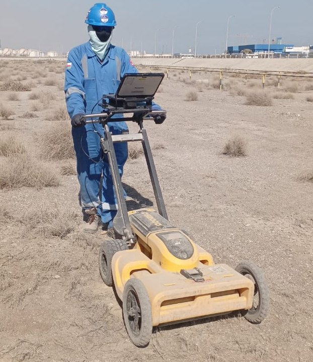

The instruments behind our results
Every survey is matched to the right instrument and frequency. These are the systems our teams deploy in India and Oman.

Leica DS2000
Dual-frequency GPR (250 / 700 MHz) that records shallow and deep services in a single pass.

Leica DS4000
Leica utility-detection GPR for mapping dense service networks on larger sites.

400/900 MHz dual-frequency antenna
Coupled to a rail vehicle for continuous ballast, sub-ballast and formation profiling.

2 GHz antenna
High-resolution antenna for the ballast surface layer and for concrete rebar and void scanning.

Aimil resistivity imaging system
Multi-electrode resistivity system for 2D sections of groundwater, rock and cavities.

Aimil multichannel seismograph
Seismograph with geophone spreads for refraction tomography and surface-wave analysis.

Handheld 3D laser scanner
Walk-through SLAM scanner for plants, buildings, tunnels and corridors.

GNSS RTK & total station
Centimetre-level positioning for topo surveys and for tying all data to site coordinates.
Which instrument for which question
| Question on site | Method | Equipment | Typical depth |
|---|---|---|---|
| Where are the buried services? | GPR + EM locating | Leica DS2000 / DS4000 | 0 – 4 m |
| How thick and how fouled is the ballast? | Vehicle-coupled GPR | 2 GHz + 400/900 MHz | 0 – 2.5 m |
| Where is the rebar before we core? | High-frequency GPR | 2 GHz antenna | 0 – 0.6 m |
| How deep is rock or water? | ERT | Aimil resistivity system | Up to ~100 m |
| Can the ground be ripped or must it be blasted? | SRT | Aimil seismograph | Up to ~30 m |
| What is the seismic site class (Vs30)? | MASW | Aimil seismograph | Up to ~30 m |
| What does the site look like in 3D? | Laser scanning / topo | Handheld scanner, GNSS, total station | Surface |
Investigation depths are indicative and depend on ground conditions and array length.